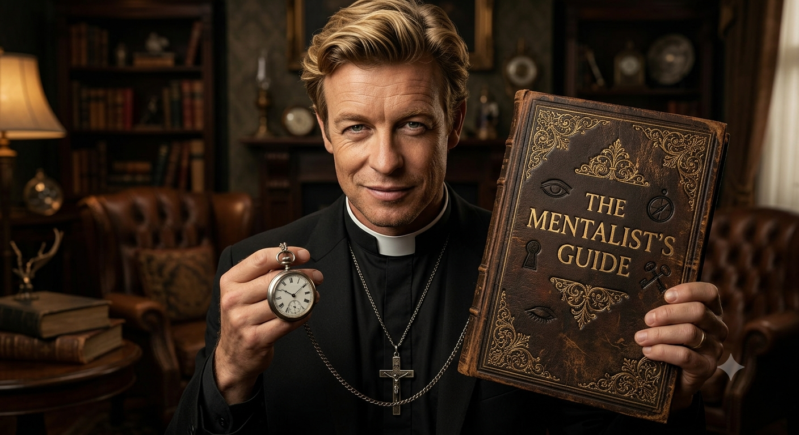

A História dos Salões Ancestrais mentalista guide nanão
A Irmandade Nanão-Cracia foi formada por bravos guerreiros e mestres forjadores. Unidos pelo compromisso de defender seus salões, eles governam sob a regra da fraternidade, honrando cada machado forjado e cada tesouro protegido.
Membros da fraternidade totalitária e única:
NANÃO, ELIAS, LUTI, JULIA , RICÃO, MAYCK, JOCA MATOZ, CAIO, ATYLA, KAUAN, JOSÉ, JOÃO OTAVIO, MIGUEL E OUTROS.
Os 10 Mandamentos Sagrados
- Nanão é o Centro — Tudo gravita ao redor dele.
- Lealdade Absoluta — A irmandade vem sempre em primeiro lugar.
- Respeito ao Fechamento — Quem tá com a gente, tá com a gente.
- Resenha Sagrada — Onde Nanão estiver, a paz e a zoação são lei.
- A Palavra É Uma Só — Sem curva, sem mancada e sem curva de rio.
- Proteja o Irmão — Ninguém fica para trás.
- Confiança Cega — O que é dito no círculo, morre no círculo.
- Energia Lá Em Cima — Nanão não tolera vibe baixa.
- Dividir É Regra — A conquista de um é a vitória de todos.
- Seguir o Fluxo — O universo gira, mas o foco não muda.